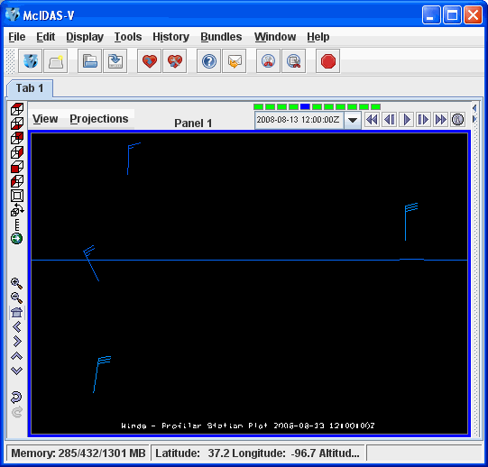

McIDAS-V Profiler Time/Height plot shows wind data from any of the NOAA National Profiler Network stations. You can choose hourly, 30 minute, 12 minute, or 6 minute data.
Other displays provided include Profiler Station plot, which shows a plan view at one level, and the Profiler 3D View.
|
 Image 2: Profiler Station Plot |
 Image 3: Profiler 3D View |
For more information see Profiler Controls.